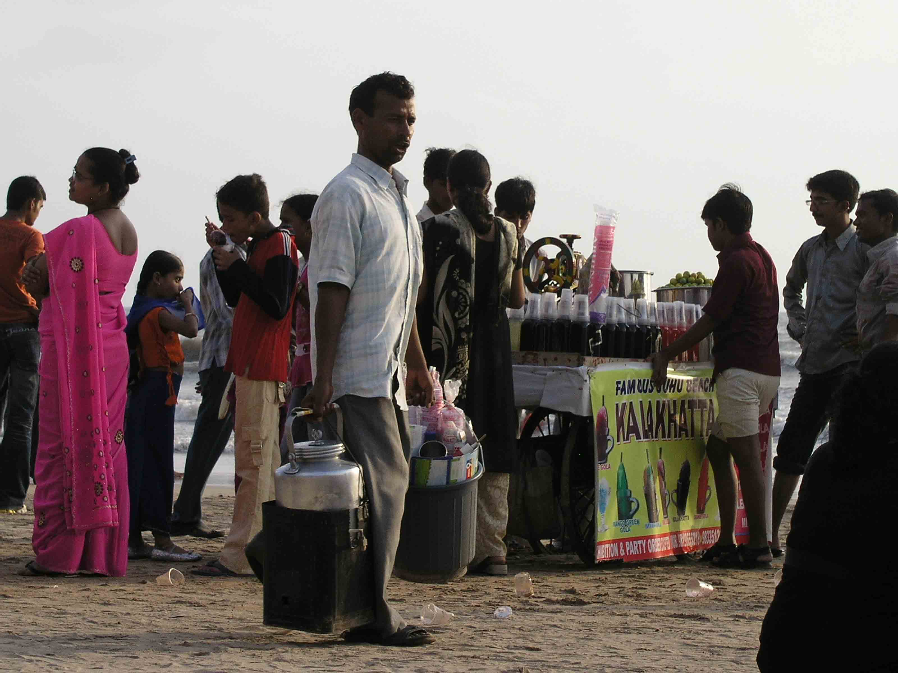
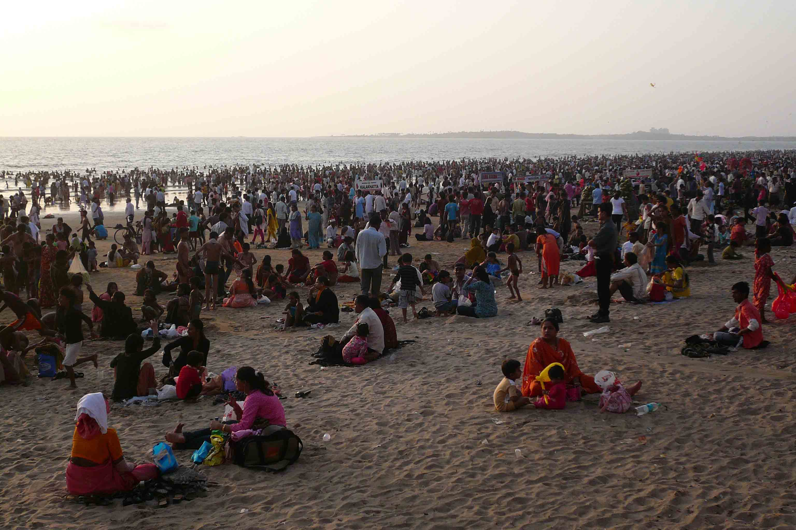
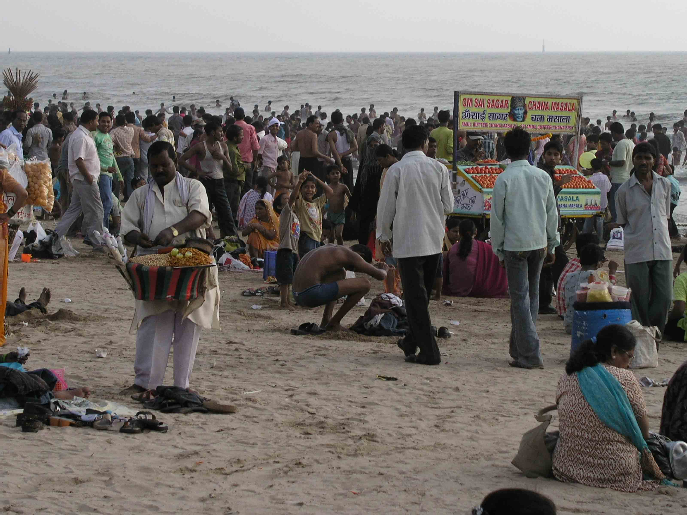
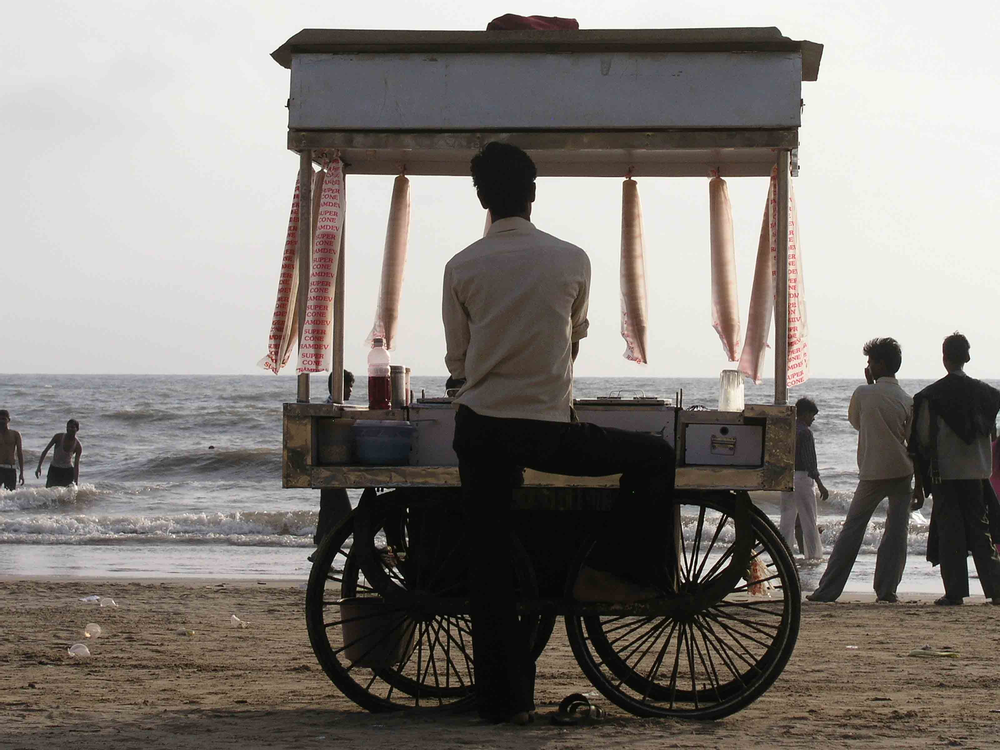
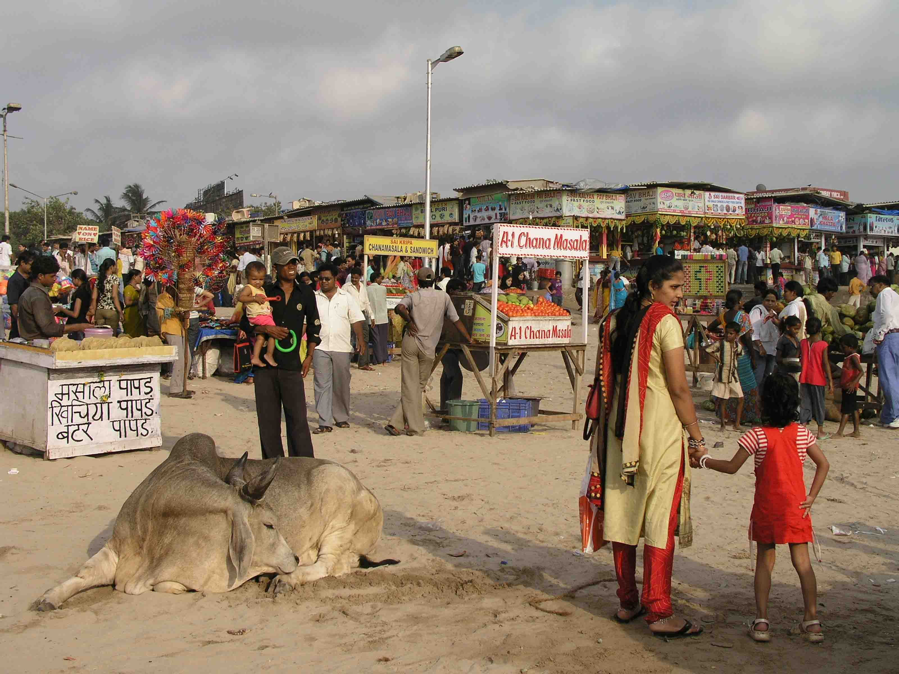

The Bombay Cacophony
Mumbai, India
After numerous requests and a first month of craziness in this new city we are calling home for a while, we have decided to resurrect yearaway. But where to begin…? What better place than here and now at the Sea View Hotel Bar on Juhu Chowpatty watching the sun set over the Arabian sea and the teeming weekend hoards on the beach below. From here we can see…a big wheel being turned by a small man, a lady with talking scales, a map seller, a corn seller, a paan seller, a mehndi lady, piles of coconuts…in fact from where we are sitting it looks as if the whole of India is out on the beach this evening!
We have been here for just over a month now and have, after weeks of flat hunting and despondency, moved into a lovely little apartment in Bandra, otherwise known as ‘the Queen of the Suburbs’. On St Leo Road, our place looks out over a leafy street which is far enough away from the main road for a Mumbaiker to think its quiet, but really there is never a moment of true silence. I’ve chosen to call this ‘The Bombay Cacophony’. Its starts with the horn section from the multitude of rickshaws, cars and taxis on Turner Road and is joined by the man who plays the accordion and sings ‘You are my sunshine’ under our balcony at the weekend. We reach a crescendo as the fish seller with a basket firmly resting on his head shouts his wares and the roaring finale comes from the recycling man whose calls sound much like ‘Bring out your dead’ but surely involves something about cardboard and plastic.
Bombay is an ‘attack on the senses’ – even ones you didn’t know you had. In one minute you can be hot, sweaty and frustrated and the next second you turn a corner and see something that makes your eyes grow to the size of saucers and the frustration is a long-forgotten memory. Like this afternoon we were sitting in a rickshaw at a crossroads in the heat of the day – nothing was moving, no one was giving way and it seemed that we would be there forever – then the sunlight caught the rickshaw in front and we saw three ladies sitting in the back and the bright cerise of their saris sparkled. A moment of beauty and splendour on a busy polluted street. Hard to explain… but it’s what makes India such a wonderful place to be.
Now the sun has set. The beach is still teeming. The sellers are still out there, but now with bright bulbs and kerosene lamps lighting their stalls and we’re off for a Guajarati Thali loaded with fatty, sugary jalebis. The perfect Sunday!
We have been here for just over a month now and have, after weeks of flat hunting and despondency, moved into a lovely little apartment in Bandra, otherwise known as ‘the Queen of the Suburbs’. On St Leo Road, our place looks out over a leafy street which is far enough away from the main road for a Mumbaiker to think its quiet, but really there is never a moment of true silence. I’ve chosen to call this ‘The Bombay Cacophony’. Its starts with the horn section from the multitude of rickshaws, cars and taxis on Turner Road and is joined by the man who plays the accordion and sings ‘You are my sunshine’ under our balcony at the weekend. We reach a crescendo as the fish seller with a basket firmly resting on his head shouts his wares and the roaring finale comes from the recycling man whose calls sound much like ‘Bring out your dead’ but surely involves something about cardboard and plastic.
Bombay is an ‘attack on the senses’ – even ones you didn’t know you had. In one minute you can be hot, sweaty and frustrated and the next second you turn a corner and see something that makes your eyes grow to the size of saucers and the frustration is a long-forgotten memory. Like this afternoon we were sitting in a rickshaw at a crossroads in the heat of the day – nothing was moving, no one was giving way and it seemed that we would be there forever – then the sunlight caught the rickshaw in front and we saw three ladies sitting in the back and the bright cerise of their saris sparkled. A moment of beauty and splendour on a busy polluted street. Hard to explain… but it’s what makes India such a wonderful place to be.
Now the sun has set. The beach is still teeming. The sellers are still out there, but now with bright bulbs and kerosene lamps lighting their stalls and we’re off for a Guajarati Thali loaded with fatty, sugary jalebis. The perfect Sunday!

Human-powered funfair on Juhu Chowpatty

Chai man

Before the hoards appeared

One of those moments of colour

More views of Juhu Chowpatty

Ice-cream anyone?

...and a cow